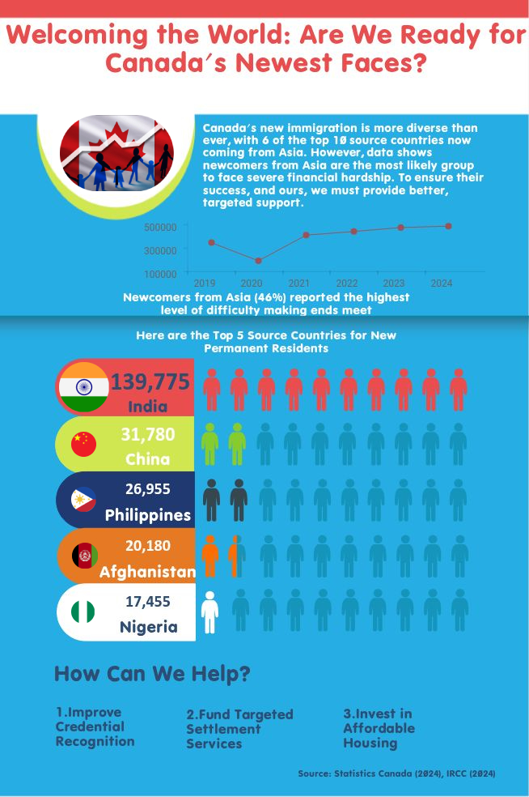

<div class="grid">

        <article class="card">
            <a href="work1.pdf" target="_blank">
                
            </a>
            <div class="card-content">
                <span class="tag">Scrollytelling & Storyboard</span>
                <h3>
                    <a href="work1.pdf" target="_blank" style="text-decoration: none; color: inherit;">The Great Re-Commute</a>
                </h3>
                <p>
                    <strong>The Challenge:</strong> Post-pandemic Toronto faces a clash between Return-to-Office mandates and Work-from-Home preferences. Abstract stats about "occupancy rates" often ignore the human cost.
                </p>
                <p>
                    <strong>The Solution:</strong> I created a narrative storyboard following three distinct characters—Amy (the hybrid parent), Raj (the business owner), and Leonard (the relocated worker).
                </p>
                <a href="work1.pdf" target="_blank" style="color: #e67e22; font-weight: bold;">View Full Storyboard (PDF) &rarr;</a>
            </div>
        </article>

        <article class="card">
            <a href="work2.pdf" target="_blank">
                
            </a>
            <div class="card-content">
                <span class="tag">Historical Data Analysis</span>
                <h3>
                    <a href="work2.pdf" target="_blank" style="text-decoration: none; color: inherit;">Deconstructing the Grande Armée</a>
                </h3>
                <p>
                    <strong>The Challenge:</strong> Minard’s famous 1869 map portrays Napoleon’s army as a single "monolith" marching to tragedy. This simplifies the reality that different regiments had vastly different outcomes.
                </p>
                <p>
                    <strong>The Insight:</strong> By disaggregating the data into three troops, this comparative redesign reveals that while the central force was decimated, the northern flanking regiments actually returned largely intact.
                </p>
                <a href="work2.pdf" target="_blank" style="color: #e67e22; font-weight: bold;">View Full Analysis (PDF) &rarr;</a>
            </div>
        </article>

        <article class="card">
            <a href="work3.jpg" target="_blank">
                
            </a>
            <div class="card-content">
                <span class="tag">Infographic Design</span>
                <h3>
                    <a href="work3.jpg" target="_blank" style="text-decoration: none; color: inherit;">Are We Ready for New Faces?</a>
                </h3>
                <p>
                    <strong>The Context:</strong> With 6 of the top 10 source countries for Canadian immigration now in Asia, diversity is higher than ever. However, integration success varies wildly.
                </p>
                <p>
                    <strong>The Insight:</strong> This visualization highlights a critical gap: Newcomers from Asia (46%) report the highest difficulty making ends meet. The design argues for targeted settlement services.
                </p>
                <a href="work3.jpg" target="_blank" style="color: #e67e22; font-weight: bold;">View Full Infographic (JPG) &rarr;</a>
            </div>
        </article>

    </div>
    ```

3.  Click **Commit changes**.
4.  Wait 1-2 minutes for the site to update, then refresh your page. Now, clicking the image or the text link will open the full PDF in a new tab.
